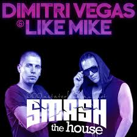
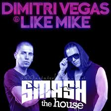

Dimitri Thivaios, más conocido como "Dimitri Vegas", nació el 16 de mayo de 1981, comenzó a hacer sus primeras incursiones como DJ a la edad de 14 años. En sus primeros años, realizó varias presentaciones en lugares menores y fue el DJ residente de la radio BeatFM. Debido a una coincidencia afortunada, dejó Bélgica en 1999 y comenzó a girar por Europa. Vivió en Mallorca, después en Halkidiki, Grecia, antes de trasladarse a Ibiza en 2003, donde fue residente en importantes discotecas como Privilege y Space. Luego regresó a Mallorca, pasando por las Islas Canarias, hasta afincarse en Zante, Grecia, donde fue residente de Amnesia y The End en el 2006. En otoño de 2006, regresó a Bélgica para trabajar en equipo con su hermano, Michael Thivaios, más conocido como "Like Mike", nacido el 2 de diciembre de 1985, para producir su primer lanzamiento 'La Cocaína / Eivissa 2007 y su remix del himno de Push "Universal Nation" editados en 2007 por Bonzai Records.
 

| Fecha | País | Lugar |
|---|---|---|
| 2020-25-07 | Belgica | Amberes |
| 2020-30-07 | Rumania | Cluj Arena |
| 2020-05-08 | España | Playa Villaricos |
| 2020-04-09 | España | Sala Pelicano |
| 2021-13-05 | Alemania | Tante Mia Tanzt |